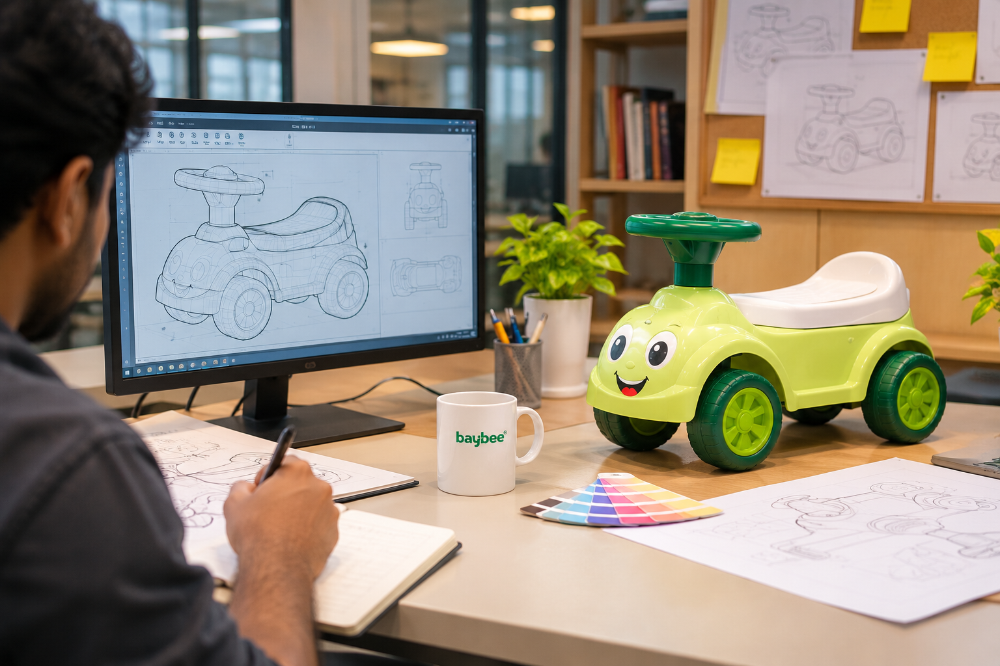
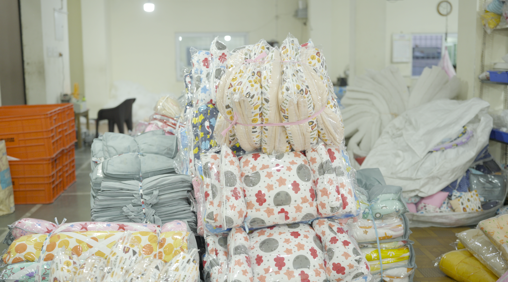
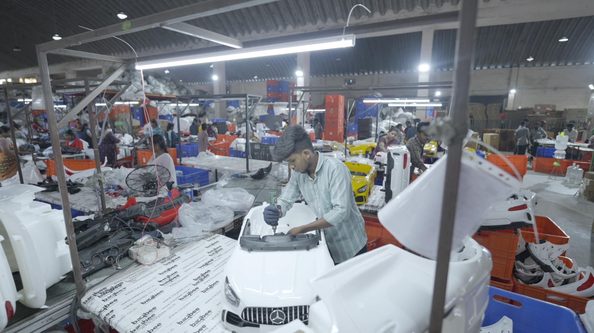

01
Design & Development
From concept to product planning.
At Blix, every detail matters when creating products for children. Our approach to quality focuses on consistent processes, careful inspection, and meeting applicable product requirements.

Have an overview of the processes, people, and capabilities behind every product we manufacture.
From concept to product planning.
Turning designs into tangible products.
Checking products against defined quality standards.
Preparing finished products for delivery.
We help connect the decisions that make a product work — not just the way it looks, but the way it can be made consistently.


A closer look at the experience, capabilities, and scale behind every Blix creation.
Replace these capability descriptions with your company's verified machinery, certifications, capacity and quality standards before publishing.
Whether you're exploring our product range or looking for a manufacturing partner, we'd love to understand your requirements.